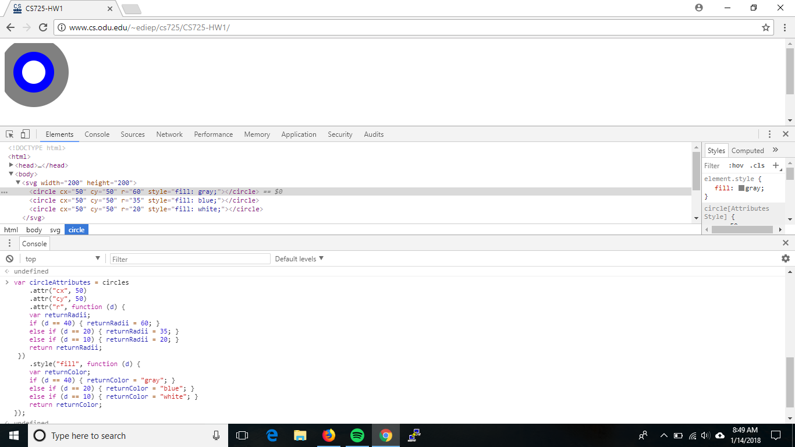

Below screenshot shows the rendered page, Elements tab, and JavaScript Console window for when I changed the circle radii and colors during the example in the section Creating SVG Elements Based on Data, "Styling SVG Elements Based on Data". 